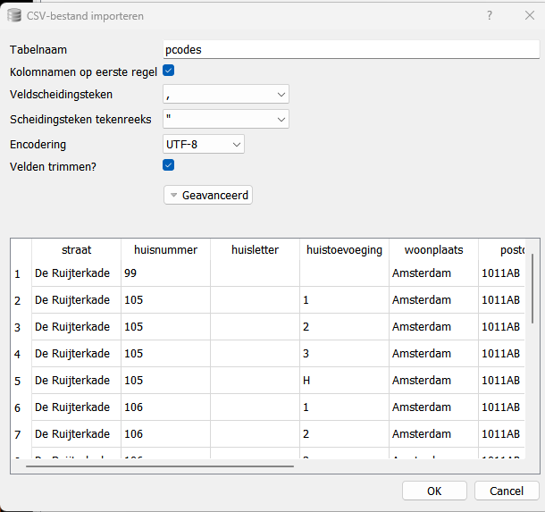
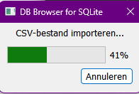
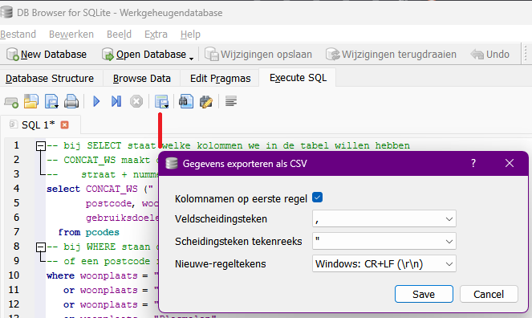

Dit is de nieuwe methode, die veel gemakkelijker werkt dan de oude methode met de site van het kadaster en het programma QGIS. Deze methode is mogelijk gemaakt door het voorbereidende werk van Bert Hubert, zie https://berthub.eu/articles/posts/dutch-postcode-and-building-database/
- download en unzip: https://berthub.eu/bagconv/pcodes.zip
- open met een database browser het csv bestand
- selecteer de data met "jouw" SQL regels (zie voorbeelden hieronder)
- bewaar de selectie als nieuw csv bestand (dit wordt vervolgens geïmporteerd in Excel)
Gebruik een goede en handige database browser. Hier gebruik ik
DBBrowser for SQLite (free, opensource, cross-platform):
https://github.com/sqlitebrowser/sqlitebrowser
https://sourceforge.net/projects/db-browser-for-sqlite.mirror/
Er zijn vele andere database browsers, bijv.
SQLiteStudio (free, opensource, cross-platform):
https://sqlitestudio.pl
download: https://berthub.eu/bagconv/pcodes.zip
beschrijving: https://berthub.eu/articles/posts/dutch-postcode-and-building-database/
als je het bestand zoekt, vergeet dan niet rechts-onderaan "alle bestandstypen" te selecteren, anders zie je het csv-bestand niet staan.
Je krijgt de eerste regels van het bestand te zien

Druk op "OK" en het bestand wordt geimporteerd als Database, dat kan een minuut duren

Het hele bestand is ingelezen


Het beste is om om plaatsnaam te selecteren, zoals in dit voorbeeld voor de gemeente Mook en Middelaar is gedaan. Voor een plaats als Amsterdam hou je dan veel te veel plaatsen over. Je zult dan of op postcode of plaatsnaam en postcode moeten zoeken.
De kollommen worden ook gelijk in exact de juiste volgorde aangemaakt, zoals ze nodig zijn in Inzicht_Warmtelek.
SQL
-- bij SELECT staat welke kolommen we in de tabel willen hebben
-- CONCAT_WS maakt de eerste kolom een samenstelling van
-- straat + nummer + toevoeging
select CONCAT_WS (" ", straat, CONCAT ( huisnummer, huisletter ) ) as Adres,
postcode, woonplaats, bouwjaar, oppervlakte,
gebruiksdoelen, straat, huisnummer, huisletter
from pcodes
-- bij WHERE staan de woonplaatsen (dorspkernen) die we willen hebben
where woonplaats = "Middelaar"
or woonplaats = "Molenhoek"
or woonplaats = "Mook"
or woonplaats = "Plasmolen"
order by Adres

Je kunt ook een postcode range(s) of een combinatie van woonplaats en postcodes opgeven. Mocht je hier niet uitkomen, mag je me altijd om raad vragen. Voor Mook en Middelaar ziet er dat als volgt uit:
``` SQL
-- bij SELECT staat welke kolommen we in de tabel willen hebben
-- CONCAT_WS maakt de eerste kolom een samenstelling van
-- straat + nummer + toevoeging
select CONCAT_WS (" ", straat, CONCAT ( huisnummer, huisletter ) ) as Adres,
postcode, woonplaats, bouwjaar, oppervlakte,
gebruiksdoelen, straat, huisnummer, huisletter
from pcodes
-- bij WHERE staan de woonplaatsen (dorspkernen) die we willen hebben
-- of een postcode range
where postcode >= "6584"
and postcode < "6588"
order by Adres
```

Het resultaat is (helaas) iets kleiner, omdat er een aantal huizen is dat geen postcode heeft.
bijvoorbeeld:

Elke postcode is uniek en identificeert een specifieke locatie in Nederland. De eerste twee cijfers van de postcode geven de regio aan, terwijl de laatste twee cijfers en twee letters een specifieker gebied binnen die regio aanduiden. Bijvoorbeeld, een postcode zoals 1012 AB verwijst naar een locatie in Amsterdam, terwijl 2597 KP naar een plek in Den Haag wijst. aldus
https://uitgenodigd.nl/het-mysterie-van-de-nederlandse-postcodes-ontrafeld-hoeveel-zijn-er-eigenlijk/
Druk op het "floppy"-icoon, rechts van het blauwe pijltje en pas eventueel de gegevens aan, zoals in het plaatje hieronder is gedaan.
- Kies exporteren naar CSV
- Druk vervolgens op Save
- Geef een bestandsnaam
